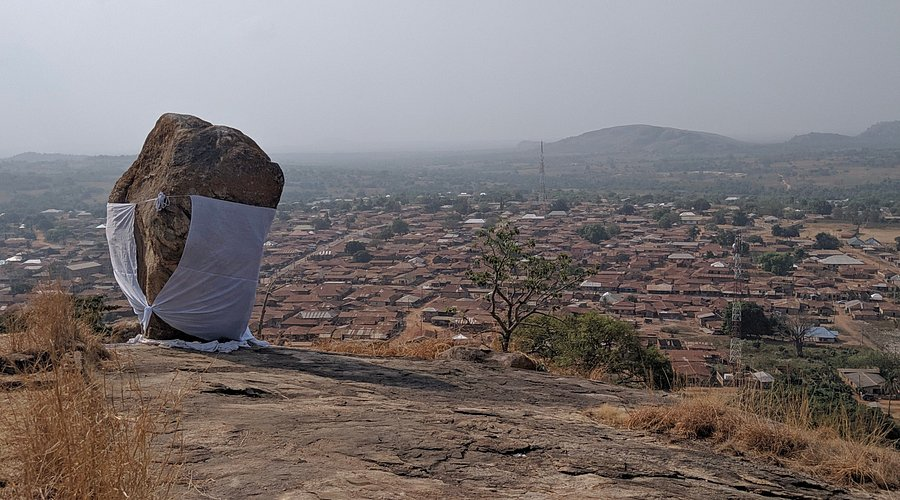
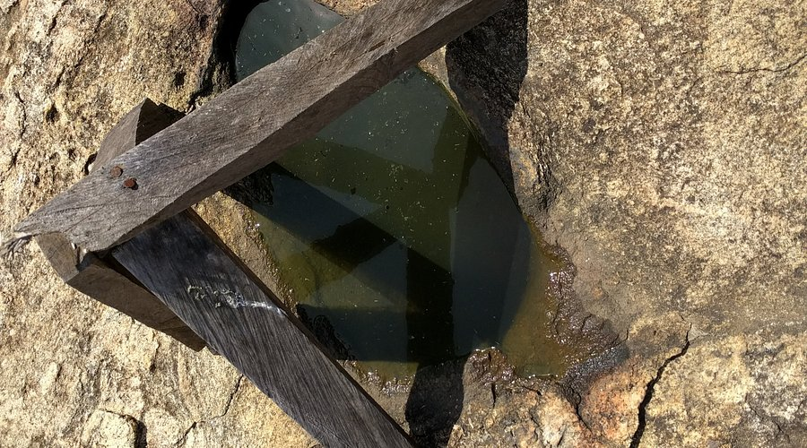
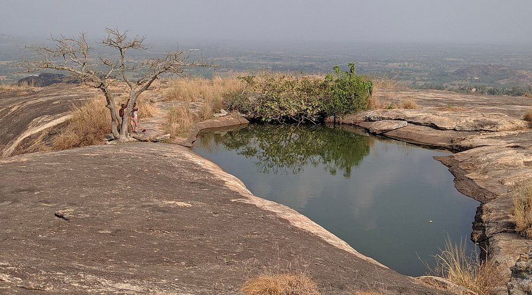

The legend of the town's origins:
The Ado Awaye suspended lake is atop Oke Ado, a large hill in the mysterious town of Ado Awaiye. The town's origins stretch back to the 1500's and the tales are full of interesting twist and turns. Ado Awaye was was founded when a prince of the Oyo kingdom was denied his right to the throne because of his "impure" blood. His mother was from Ota, and his brother was crowned in his stead. He left in annoyance for his mother's hometown and on the way he encountered people in the Ado community. They were escapees from the Dahomey war and they made him their king after learning of his heritage. They would later amalgamate with the neighboring town of Awaiye, and that's how we have Ado-Awaiye today. This hill we would be climbing was a refuge that an entire civilization grew from, and we were excited to see and hear the whispers from those that inhabited these lands centuries ago.
The hike:
It's a short and steep climb, and after having spent the previous days on similar hikes, we were quite burnt out. It took us about 25 minutes to climb 365 ancient stairs, but you get a hiking stick that makes it easier. We visited during the wet season so the vegetation had grown thick - making it difficult to navigate, but we hacked through with the sticks. The site could definitely use some maintenance to keep the trail in good shape and make the climb safer. The forest canopy was thick as well, a fantastic habitat for the population of monkeys that reside on the hill. They had dropped hundreds of fruit seeds around us we were informed that these were a prime target for hunters in the area - we have an unhealthy obsession with bushmeat. About halfway up, we came across the first attraction - the Ishage Rock, a large boulder delicately balanced on the hill face in the most mystical manner. The people believe the rock to contain great power and many people come here to make wishes. When these are granted, they return to the rock and tie a white cloth around it in thanks. The rock is also a rain maker, and during times of drought, priestesses pray to Oke Ishage for rainfall for their f arms and families. We took a short break and I said a little prayer before we trudged along.